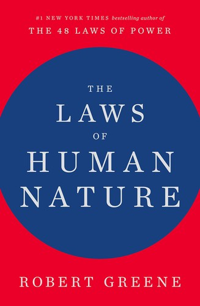
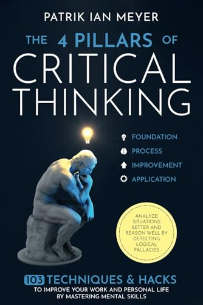
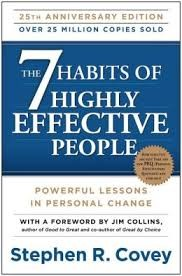

Thoughts
Elaborated thoughts on things that peak my interest, and the books behind them.
Books
I set out to read more in 2026 — recording my finished books and biggest takeaways here.

Small habits compound into remarkable results. The system you belong to matters more than the goals you set — identity-based habits are what stick. You don't rise to the level of your goals, you fall to the level of your systems.

People are moved by emotion, not logic. Genuine interest in others, remembering names, and making people feel important are not soft skills — they are leverage. The ability to see things from the other person's perspective is rarer and more powerful than almost any technical skill.

People are largely driven by unconscious forces — envy, narcissism, grandiosity — that they rarely admit to themselves. The most powerful skill is learning to read these forces in others before they act on them, and to recognize them honestly in yourself first.
Organizations are systems, and every system has inputs, processes, and outputs that must be understood together. Information flows are as important as material flows — designing them poorly creates friction everywhere else in the business.
Wisdom cannot be taught — only experienced. Every path, including the wrong ones, is part of the journey. The river teaches that everything passes, everything is connected, and the present moment contains all time simultaneously.

Clear thinking requires four disciplines working together: questioning assumptions, evaluating evidence, reasoning logically, and recognizing your own biases. Most bad decisions aren't from lack of information — they're from skipping one of these steps under pressure.
Price action tells a story about supply and demand that fundamentals alone miss. Patterns repeat because human psychology repeats — understanding chart structure is ultimately an exercise in understanding crowd behavior under uncertainty.

Effectiveness is built from the inside out — private victories before public ones. Begin with the end in mind, prioritize what matters over what's urgent, and seek first to understand before being understood. Interdependence is a higher state than independence.